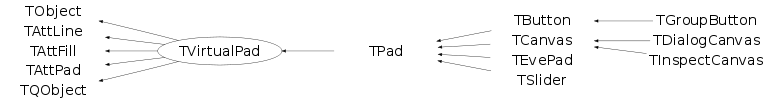

Function Members (Methods)
This is an abstract class, constructors will not be documented.
Look at the header to check for available constructors.
public:
| virtual | ~TVirtualPad() |
| virtual void | AbsCoordinates(Bool_t set) |
| virtual Double_t | AbsPixeltoX(Int_t px) |
| virtual Double_t | AbsPixeltoY(Int_t py) |
| void | TObject::AbstractMethod(const char* method) const |
| virtual void | AddExec(const char* name, const char* command) |
| virtual void | TObject::AppendPad(Option_t* option = "") |
| static Bool_t | TQObject::AreAllSignalsBlocked() |
| Bool_t | TQObject::AreSignalsBlocked() const |
| static Bool_t | TQObject::BlockAllSignals(Bool_t b) |
| Bool_t | TQObject::BlockSignals(Bool_t b) |
| virtual void | TObject::Browse(TBrowser* b) |
| virtual TVirtualPad* | cd(Int_t subpadnumber = 0) |
| virtual void | TQObject::ChangedBy(const char* method)SIGNAL |
| static TClass* | Class() |
| virtual const char* | TObject::ClassName() const |
| virtual void | Clear(Option_t* option = "") |
| virtual TObject* | TObject::Clone(const char* newname = "") const |
| virtual void | Close(Option_t* option = "") |
| virtual void | CloseToolTip(TObject* tip) |
| void | TQObject::CollectClassSignalLists(TList& list, TClass* cls) |
| virtual Int_t | TObject::Compare(const TObject* obj) const |
| Bool_t | TQObject::Connect(const char* signal, const char* receiver_class, void* receiver, const char* slot) |
| static Bool_t | TQObject::Connect(TQObject* sender, const char* signal, const char* receiver_class, void* receiver, const char* slot) |
| static Bool_t | TQObject::Connect(const char* sender_class, const char* signal, const char* receiver_class, void* receiver, const char* slot) |
| virtual void | TQObject::Connected(const char*) |
| virtual void | TObject::Copy(TObject& object) const |
| virtual void | CopyPixmap() |
| virtual void | CopyPixmaps() |
| virtual TObject* | CreateToolTip(const TBox* b, const char* text, Long_t delayms) |
| virtual void | TObject::Delete(Option_t* option = "")MENU |
| virtual void | DeleteExec(const char* name) |
| virtual void | DeleteToolTip(TObject* tip) |
| virtual void | TQObject::Destroyed()SIGNAL |
| Bool_t | TQObject::Disconnect(const char* signal = 0, void* receiver = 0, const char* slot = 0) |
| static Bool_t | TQObject::Disconnect(TQObject* sender, const char* signal = 0, void* receiver = 0, const char* slot = 0) |
| static Bool_t | TQObject::Disconnect(const char* class_name, const char* signal, void* receiver = 0, const char* slot = 0) |
| virtual void | TQObject::Disconnected(const char*) |
| Int_t | TAttLine::DistancetoLine(Int_t px, Int_t py, Double_t xp1, Double_t yp1, Double_t xp2, Double_t yp2) |
| virtual Int_t | TObject::DistancetoPrimitive(Int_t px, Int_t py) |
| virtual void | Divide(Int_t nx = 1, Int_t ny = 1, Float_t xmargin = 0.01, Float_t ymargin = 0.01, Int_t color = 0) |
| virtual void | Draw(Option_t* option = "") |
| virtual void | TObject::DrawClass() constMENU |
| virtual void | DrawClassObject(const TObject* obj, Option_t* option = "") |
| virtual TObject* | TObject::DrawClone(Option_t* option = "") constMENU |
| virtual TH1F* | DrawFrame(Double_t xmin, Double_t ymin, Double_t xmax, Double_t ymax, const char* title = "") |
| virtual void | TObject::Dump() constMENU |
| void | TQObject::Emit(const char* signal) |
| void | TQObject::Emit(const char* signal, Long_t* paramArr) |
| void | TQObject::Emit(const char* signal, const char* params) |
| void | TQObject::Emit(const char* signal, Double_t param) |
| void | TQObject::Emit(const char* signal, Long_t param) |
| void | TQObject::Emit(const char* signal, Long64_t param) |
| void | TQObject::Emit(const char* signal, Bool_t param) |
| void | TQObject::Emit(const char* signal, Char_t param) |
| void | TQObject::Emit(const char* signal, UChar_t param) |
| void | TQObject::Emit(const char* signal, Short_t param) |
| void | TQObject::Emit(const char* signal, UShort_t param) |
| void | TQObject::Emit(const char* signal, Int_t param) |
| void | TQObject::Emit(const char* signal, UInt_t param) |
| void | TQObject::Emit(const char* signal, ULong_t param) |
| void | TQObject::Emit(const char* signal, ULong64_t param) |
| void | TQObject::Emit(const char* signal, Float_t param) |
| void | TQObject::EmitVA(const char* signal, Int_t nargs) |
| void | TQObject::EmitVA(const char* signal, Int_t nargs, va_list va) |
| virtual void | TObject::Error(const char* method, const char* msgfmt) const |
| virtual void | TObject::Execute(const char* method, const char* params, Int_t* error = 0) |
| virtual void | TObject::Execute(TMethod* method, TObjArray* params, Int_t* error = 0) |
| virtual void | TObject::ExecuteEvent(Int_t event, Int_t px, Int_t py) |
| virtual void | ExecuteEventAxis(Int_t event, Int_t px, Int_t py, TAxis* axis) |
| virtual void | TObject::Fatal(const char* method, const char* msgfmt) const |
| virtual TObject* | TObject::FindObject(const char* name) const |
| virtual TObject* | TObject::FindObject(const TObject* obj) const |
| virtual Double_t | GetAbsHNDC() const |
| virtual Double_t | GetAbsWNDC() const |
| virtual Double_t | GetAbsXlowNDC() const |
| virtual Double_t | GetAbsYlowNDC() const |
| Float_t | TAttPad::GetAfile() const |
| virtual Double_t | GetAspectRatio() const |
| Float_t | TAttPad::GetAstat() const |
| virtual Short_t | GetBorderMode() const |
| virtual Short_t | GetBorderSize() const |
| Float_t | TAttPad::GetBottomMargin() const |
| virtual TCanvas* | GetCanvas() const |
| virtual Int_t | GetCanvasID() const |
| virtual TCanvasImp* | GetCanvasImp() const |
| virtual Option_t* | TObject::GetDrawOption() const |
| static Long_t | TObject::GetDtorOnly() |
| virtual Int_t | GetEvent() const |
| virtual Int_t | GetEventX() const |
| virtual Int_t | GetEventY() const |
| virtual Color_t | TAttFill::GetFillColor() const |
| virtual Style_t | TAttFill::GetFillStyle() const |
| virtual TFrame* | GetFrame() |
| Int_t | TAttPad::GetFrameBorderMode() const |
| Width_t | TAttPad::GetFrameBorderSize() const |
| Color_t | TAttPad::GetFrameFillColor() const |
| Style_t | TAttPad::GetFrameFillStyle() const |
| Color_t | TAttPad::GetFrameLineColor() const |
| Style_t | TAttPad::GetFrameLineStyle() const |
| Width_t | TAttPad::GetFrameLineWidth() const |
| virtual Int_t | GetGLDevice() |
| virtual Bool_t | GetGridx() const |
| virtual Bool_t | GetGridy() const |
| virtual Color_t | GetHighLightColor() const |
| virtual Double_t | GetHNDC() const |
| virtual const char* | TObject::GetIconName() const |
| Float_t | TAttPad::GetLeftMargin() const |
| virtual Color_t | TAttLine::GetLineColor() const |
| virtual Style_t | TAttLine::GetLineStyle() const |
| virtual Width_t | TAttLine::GetLineWidth() const |
| TList* | TQObject::GetListOfClassSignals() const |
| TList* | TQObject::GetListOfConnections() const |
| virtual TList* | GetListOfExecs() const |
| virtual TList* | GetListOfPrimitives() const |
| TList* | TQObject::GetListOfSignals() const |
| virtual Int_t | GetLogx() const |
| virtual Int_t | GetLogy() const |
| virtual Int_t | GetLogz() const |
| virtual TVirtualPad* | GetMother() const |
| virtual const char* | GetName() const |
| virtual Int_t | GetNumber() const |
| virtual char* | TObject::GetObjectInfo(Int_t px, Int_t py) const |
| static Bool_t | TObject::GetObjectStat() |
| virtual Option_t* | TObject::GetOption() const |
| virtual TVirtualPad* | GetPad(Int_t subpadnumber) const |
| virtual Int_t | GetPadPaint() const |
| virtual void | GetPadPar(Double_t& xlow, Double_t& ylow, Double_t& xup, Double_t& yup) |
| virtual TObject* | GetPadPointer() const |
| virtual TVirtualPad* | GetPadSave() const |
| virtual Double_t | GetPhi() const |
| virtual Int_t | GetPixmapID() const |
| virtual TObject* | GetPrimitive(const char* name) const |
| virtual void | GetRange(Double_t& x1, Double_t& y1, Double_t& x2, Double_t& y2) |
| virtual void | GetRangeAxis(Double_t& xmin, Double_t& ymin, Double_t& xmax, Double_t& ymax) |
| Float_t | TAttPad::GetRightMargin() const |
| virtual TObject* | GetSelected() const |
| virtual TVirtualPad* | GetSelectedPad() const |
| virtual Double_t | GetTheta() const |
| virtual Int_t | GetTickx() const |
| virtual Int_t | GetTicky() const |
| virtual const char* | GetTitle() const |
| Float_t | TAttPad::GetTopMargin() const |
| virtual UInt_t | TObject::GetUniqueID() const |
| virtual Double_t | GetUxmax() const |
| virtual Double_t | GetUxmin() const |
| virtual Double_t | GetUymax() const |
| virtual Double_t | GetUymin() const |
| virtual TView* | GetView() const |
| virtual TObject* | GetView3D() const |
| virtual TVirtualViewer3D* | GetViewer3D(Option_t* type = "") |
| virtual TVirtualPad* | GetVirtCanvas() const |
| virtual UInt_t | GetWh() const |
| virtual Double_t | GetWNDC() const |
| virtual UInt_t | GetWw() const |
| virtual Double_t | GetX1() const |
| virtual Double_t | GetX2() const |
| Float_t | TAttPad::GetXfile() const |
| virtual Double_t | GetXlowNDC() const |
| Float_t | TAttPad::GetXstat() const |
| virtual Double_t | GetY1() const |
| virtual Double_t | GetY2() const |
| Float_t | TAttPad::GetYfile() const |
| virtual Double_t | GetYlowNDC() const |
| Float_t | TAttPad::GetYstat() const |
| virtual Bool_t | TObject::HandleTimer(TTimer* timer) |
| virtual Bool_t | TQObject::HasConnection(const char* signal_name) const |
| virtual Bool_t | HasCrosshair() const |
| virtual Bool_t | HasFixedAspectRatio() const |
| virtual ULong_t | TObject::Hash() const |
| virtual Bool_t | HasViewer3D() const |
| virtual void | HighLight(Color_t col = kRed, Bool_t set = kTRUE) |
| virtual void | TQObject::HighPriority(const char* signal_name, const char* slot_name = 0) |
| virtual void | TObject::Info(const char* method, const char* msgfmt) const |
| virtual Bool_t | TObject::InheritsFrom(const char* classname) const |
| virtual Bool_t | TObject::InheritsFrom(const TClass* cl) const |
| virtual void | TObject::Inspect() constMENU |
| void | TObject::InvertBit(UInt_t f) |
| virtual TClass* | IsA() const |
| virtual Bool_t | IsBatch() const |
| Bool_t | IsBeingResized() const |
| virtual Bool_t | IsEditable() const |
| virtual Bool_t | TObject::IsEqual(const TObject* obj) const |
| virtual Bool_t | TObject::IsFolder() const |
| virtual Bool_t | IsModified() const |
| Bool_t | TObject::IsOnHeap() const |
| virtual Bool_t | IsRetained() const |
| virtual Bool_t | TObject::IsSortable() const |
| virtual Bool_t | TAttFill::IsTransparent() const |
| virtual Bool_t | IsVertical() const |
| Bool_t | TObject::IsZombie() const |
| static void | TQObject::LoadRQ_OBJECT() |
| virtual void | TQObject::LowPriority(const char* signal_name, const char* slot_name = 0) |
| virtual void | ls(Option_t* option = "") const |
| void | TObject::MayNotUse(const char* method) const |
| virtual void | TQObject::Message(const char* msg)SIGNAL |
| virtual void | Modified(Bool_t flag = 1) |
| virtual void | TAttLine::Modify() |
| virtual Bool_t | TObject::Notify() |
| virtual Int_t | TQObject::NumberOfConnections() const |
| virtual Int_t | TQObject::NumberOfSignals() const |
| void | TObject::Obsolete(const char* method, const char* asOfVers, const char* removedFromVers) const |
| virtual Bool_t | OpaqueMoving() const |
| virtual Bool_t | OpaqueResizing() const |
| static void | TObject::operator delete(void* ptr) |
| static void | TObject::operator delete(void* ptr, void* vp) |
| static void | TObject::operator delete[](void* ptr) |
| static void | TObject::operator delete[](void* ptr, void* vp) |
| void* | TObject::operator new(size_t sz) |
| void* | TObject::operator new(size_t sz, void* vp) |
| void* | TObject::operator new[](size_t sz) |
| void* | TObject::operator new[](size_t sz, void* vp) |
| TObject& | TObject::operator=(const TObject& rhs) |
| static TVirtualPad*& | Pad() |
| virtual Bool_t | PadInHighlightMode() const |
| virtual Bool_t | PadInSelectionMode() const |
| virtual Double_t | PadtoX(Double_t x) const |
| virtual Double_t | PadtoY(Double_t y) const |
| virtual void | Paint(Option_t* option = "") |
| virtual void | PaintBorderPS(Double_t xl, Double_t yl, Double_t xt, Double_t yt, Int_t bmode, Int_t bsize, Int_t dark, Int_t light) |
| virtual void | PaintBox(Double_t x1, Double_t y1, Double_t x2, Double_t y2, Option_t* option = "") |
| virtual void | PaintFillArea(Int_t n, Float_t* x, Float_t* y, Option_t* option = "") |
| virtual void | PaintFillArea(Int_t n, Double_t* x, Double_t* y, Option_t* option = "") |
| virtual void | PaintLine(Double_t x1, Double_t y1, Double_t x2, Double_t y2) |
| virtual void | PaintLine3D(Float_t* p1, Float_t* p2) |
| virtual void | PaintLine3D(Double_t* p1, Double_t* p2) |
| virtual void | PaintLineNDC(Double_t u1, Double_t v1, Double_t u2, Double_t v2) |
| virtual void | PaintModified() |
| virtual void | PaintPadFrame(Double_t xmin, Double_t ymin, Double_t xmax, Double_t ymax) |
| virtual void | PaintPolyLine(Int_t n, Float_t* x, Float_t* y, Option_t* option = "") |
| virtual void | PaintPolyLine(Int_t n, Double_t* x, Double_t* y, Option_t* option = "") |
| virtual void | PaintPolyLine3D(Int_t n, Double_t* p) |
| virtual void | PaintPolyLineNDC(Int_t n, Double_t* x, Double_t* y, Option_t* option = "") |
| virtual void | PaintPolyMarker(Int_t n, Float_t* x, Float_t* y, Option_t* option = "") |
| virtual void | PaintPolyMarker(Int_t n, Double_t* x, Double_t* y, Option_t* option = "") |
| virtual void | PaintText(Double_t x, Double_t y, const char* text) |
| virtual void | PaintTextNDC(Double_t u, Double_t v, const char* text) |
| virtual Double_t | PixeltoX(Int_t px) |
| virtual Double_t | PixeltoY(Int_t py) |
| virtual void | Pop() |
| virtual void | PopTopLevelSelectable() |
| virtual void | Print(const char* filename = "") const |
| virtual void | Print(const char* filename, Option_t* option) |
| virtual void | PushSelectableObject(TObject* obj) |
| virtual void | PushTopLevelSelectable(TObject* top) |
| virtual void | Range(Double_t x1, Double_t y1, Double_t x2, Double_t y2) |
| virtual void | RangeAxis(Double_t xmin, Double_t ymin, Double_t xmax, Double_t ymax) |
| virtual Int_t | TObject::Read(const char* name) |
| virtual void | RecursiveRemove(TObject* obj) |
| virtual void | RedrawAxis(Option_t* option = "") |
| virtual void | ReleaseViewer3D(Option_t* type = "") |
| virtual void | TAttFill::ResetAttFill(Option_t* option = "") |
| virtual void | TAttLine::ResetAttLine(Option_t* option = "") |
| virtual void | TAttPad::ResetAttPad(Option_t* option = "") |
| void | TObject::ResetBit(UInt_t f) |
| virtual void | ResetToolTip(TObject* tip) |
| virtual void | ResetView3D(TObject* view = 0) |
| virtual void | ResizePad(Option_t* option = "") |
| virtual void | SaveAs(const char* filename = "", Option_t* option = "") const |
| virtual void | TAttFill::SaveFillAttributes(ostream& out, const char* name, Int_t coldef = 1, Int_t stydef = 1001) |
| virtual void | TAttLine::SaveLineAttributes(ostream& out, const char* name, Int_t coldef = 1, Int_t stydef = 1, Int_t widdef = 1) |
| virtual void | TObject::SavePrimitive(ostream& out, Option_t* option = "") |
| virtual void | TAttPad::SetAfile(Float_t afile) |
| virtual void | TAttPad::SetAstat(Float_t astat) |
| virtual void | SetAttFillPS(Color_t color, Style_t style) |
| virtual void | SetAttLinePS(Color_t color, Style_t style, Width_t lwidth) |
| virtual void | SetAttMarkerPS(Color_t color, Style_t style, Size_t msize) |
| virtual void | SetAttTextPS(Int_t align, Float_t angle, Color_t color, Style_t font, Float_t tsize) |
| virtual void | SetBatch(Bool_t batch = kTRUE) |
| void | TObject::SetBit(UInt_t f) |
| void | TObject::SetBit(UInt_t f, Bool_t set) |
| virtual void | SetBorderMode(Short_t bordermode) |
| virtual void | SetBorderSize(Short_t bordersize) |
| virtual void | TAttPad::SetBottomMargin(Float_t bottommargin) |
| virtual void | SetCanvas(TCanvas* c) |
| virtual void | SetCanvasSize(UInt_t ww, UInt_t wh) |
| virtual void | SetCopyGLDevice(Bool_t copy) |
| virtual void | SetCrosshair(Int_t crhair = 1) |
| virtual void | SetCursor(ECursor cursor) |
| virtual void | SetDoubleBuffer(Int_t mode = 1) |
| virtual void | TObject::SetDrawOption(Option_t* option = "")MENU |
| static void | TObject::SetDtorOnly(void* obj) |
| virtual void | SetEditable(Bool_t mode = kTRUE) |
| virtual void | TAttFill::SetFillAttributes()MENU |
| virtual void | TAttFill::SetFillColor(Color_t fcolor) |
| virtual void | TAttFill::SetFillStyle(Style_t fstyle) |
| virtual void | SetFixedAspectRatio(Bool_t fixed = kTRUE) |
| void | TAttPad::SetFrameBorderMode(Int_t mode = 1) |
| void | TAttPad::SetFrameBorderSize(Width_t size = 1) |
| void | TAttPad::SetFrameFillColor(Color_t color = 1) |
| void | TAttPad::SetFrameFillStyle(Style_t styl = 0) |
| void | TAttPad::SetFrameLineColor(Color_t color = 1) |
| void | TAttPad::SetFrameLineStyle(Style_t styl = 0) |
| void | TAttPad::SetFrameLineWidth(Width_t width = 1) |
| virtual void | SetGrid(Int_t valuex = 1, Int_t valuey = 1) |
| virtual void | SetGridx(Int_t value = 1) |
| virtual void | SetGridy(Int_t value = 1) |
| virtual void | TAttPad::SetLeftMargin(Float_t leftmargin) |
| virtual void | TAttLine::SetLineAttributes()MENU |
| virtual void | TAttLine::SetLineColor(Color_t lcolor) |
| virtual void | TAttLine::SetLineStyle(Style_t lstyle) |
| virtual void | TAttLine::SetLineWidth(Width_t lwidth) |
| virtual void | SetLogx(Int_t value = 1) |
| virtual void | SetLogy(Int_t value = 1) |
| virtual void | SetLogz(Int_t value = 1) |
| virtual void | TAttPad::SetMargin(Float_t left, Float_t right, Float_t bottom, Float_t top) |
| virtual void | SetName(const char* name) |
| static void | TObject::SetObjectStat(Bool_t stat) |
| virtual void | SetPad(Double_t xlow, Double_t ylow, Double_t xup, Double_t yup) |
| virtual void | SetPad(const char* name, const char* title, Double_t xlow, Double_t ylow, Double_t xup, Double_t yup, Color_t color = 35, Short_t bordersize = 5, Short_t bordermode = -1) |
| virtual void | SetPhi(Double_t phi = 30) |
| virtual void | TAttPad::SetRightMargin(Float_t rightmargin) |
| virtual void | SetSelected(TObject* obj) |
| virtual void | SetTheta(Double_t theta = 30) |
| virtual void | SetTicks(Int_t valuex = 1, Int_t valuey = 1) |
| virtual void | SetTickx(Int_t value = 1) |
| virtual void | SetTicky(Int_t value = 1) |
| virtual void | SetTitle(const char* title = "") |
| virtual void | SetToolTipText(const char* text, Long_t delayms = 1000) |
| virtual void | TAttPad::SetTopMargin(Float_t topmargin) |
| virtual void | TObject::SetUniqueID(UInt_t uid) |
| virtual void | SetVertical(Bool_t vert = kTRUE) |
| virtual void | SetView(TView* view = 0) |
| virtual void | SetViewer3D(TVirtualViewer3D*) |
| virtual void | TAttPad::SetXfile(Float_t xfile) |
| virtual void | TAttPad::SetXstat(Float_t xstat) |
| virtual void | TAttPad::SetYfile(Float_t yfile) |
| virtual void | TAttPad::SetYstat(Float_t ystat) |
| virtual void | ShowMembers(TMemberInspector& insp) |
| virtual void | Streamer(TBuffer& b) |
| void | StreamerNVirtual(TBuffer& b) |
| virtual void | TObject::SysError(const char* method, const char* msgfmt) const |
| Bool_t | TObject::TestBit(UInt_t f) const |
| Int_t | TObject::TestBits(UInt_t f) const |
| virtual void | Update() |
| virtual void | TObject::UseCurrentStyle() |
| virtual Int_t | UtoAbsPixel(Double_t u) const |
| virtual Int_t | UtoPixel(Double_t u) const |
| virtual Int_t | VtoAbsPixel(Double_t v) const |
| virtual Int_t | VtoPixel(Double_t v) const |
| virtual TObject* | WaitPrimitive(const char* pname = "", const char* emode = "") |
| virtual void | TObject::Warning(const char* method, const char* msgfmt) const |
| virtual Int_t | TObject::Write(const char* name = 0, Int_t option = 0, Int_t bufsize = 0) |
| virtual Int_t | TObject::Write(const char* name = 0, Int_t option = 0, Int_t bufsize = 0) const |
| virtual Int_t | XtoAbsPixel(Double_t x) const |
| virtual Double_t | XtoPad(Double_t x) const |
| virtual Int_t | XtoPixel(Double_t x) const |
| virtual Int_t | YtoAbsPixel(Double_t y) const |
| virtual Double_t | YtoPad(Double_t y) const |
| virtual Int_t | YtoPixel(Double_t y) const |
protected:
| static Int_t | TQObject::CheckConnectArgs(TQObject* sender, TClass* sender_class, const char* signal, TClass* receiver_class, const char* slot) |
| static Bool_t | TQObject::ConnectToClass(TQObject* sender, const char* signal, TClass* receiver_class, void* receiver, const char* slot) |
| static Bool_t | TQObject::ConnectToClass(const char* sender_class, const char* signal, TClass* receiver_class, void* receiver, const char* slot) |
| virtual void | TObject::DoError(int level, const char* location, const char* fmt, va_list va) const |
| virtual void* | GetSender() |
| virtual const char* | TQObject::GetSenderClassName() const |
| void | TObject::MakeZombie() |
Data Members
public:
| enum TObject::EStatusBits { | kCanDelete | |
| kMustCleanup | ||
| kObjInCanvas | ||
| kIsReferenced | ||
| kHasUUID | ||
| kCannotPick | ||
| kNoContextMenu | ||
| kInvalidObject | ||
| }; | ||
| enum TObject::[unnamed] { | kIsOnHeap | |
| kNotDeleted | ||
| kZombie | ||
| kBitMask | ||
| kSingleKey | ||
| kOverwrite | ||
| kWriteDelete | ||
| }; |
protected:
Class Charts
{kind=link}
{kind=link}
{kind=link}
{kind=link}

Function documentation
Bool_t PadInHighlightMode() const
Should always return false, unless you can highlight selected object in pad.
void PushTopLevelSelectable(TObject* top)
Does nothing, unless you implement your own picking.
When complex object containing sub-objects (which can be picked)
is painted in a pad, this "top-level" object is pushed into
the selectables stack.
void PushSelectableObject(TObject* obj)
Does nothing, unless you implement your own picking.
"Complete" object, or part of complex object, which
can be picked.
void PopTopLevelSelectable()
Does nothing, unless you implement your own picking. Remove top level selectable and all its' children.
void AbsCoordinates(Bool_t set)
Double_t AbsPixeltoX(Int_t px)
Double_t AbsPixeltoY(Int_t py)
void AddExec(const char* name, const char* command)
TVirtualPad* cd(Int_t subpadnumber = 0)
void CopyPixmap()
void CopyPixmaps()
void DeleteExec(const char* name)
void Divide(Int_t nx = 1, Int_t ny = 1, Float_t xmargin = 0.01, Float_t ymargin = 0.01, Int_t color = 0)
void DrawClassObject(const TObject* obj, Option_t* option = "")
TH1F * DrawFrame(Double_t xmin, Double_t ymin, Double_t xmax, Double_t ymax, const char* title = "")
void ExecuteEventAxis(Int_t event, Int_t px, Int_t py, TAxis* axis)
Short_t GetBorderMode() const
Short_t GetBorderSize() const
Int_t GetCanvasID() const
TCanvasImp * GetCanvasImp() const
TVirtualPad * GetVirtCanvas() const
Color_t GetHighLightColor() const
void GetRangeAxis(Double_t& xmin, Double_t& ymin, Double_t& xmax, Double_t& ymax)
Double_t GetXlowNDC() const
Double_t GetYlowNDC() const
Double_t GetAbsXlowNDC() const
Double_t GetAbsYlowNDC() const
Double_t GetAbsWNDC() const
Double_t GetAbsHNDC() const
Double_t GetAspectRatio() const
TList * GetListOfPrimitives() const
TList * GetListOfExecs() const
TObject * GetPrimitive(const char* name) const
TObject * GetSelected() const
TVirtualPad * GetPad(Int_t subpadnumber) const
TObject * GetPadPointer() const
TVirtualPad * GetPadSave() const
TVirtualPad * GetSelectedPad() const
TVirtualPad * GetMother() const
const char * GetName() const
const char * GetTitle() const
Int_t GetPadPaint() const
Int_t GetPixmapID() const
Bool_t HasCrosshair() const
Bool_t HasFixedAspectRatio() const
Bool_t IsEditable() const
Bool_t IsModified() const
Bool_t IsRetained() const
Bool_t IsVertical() const
Bool_t OpaqueMoving() const
Bool_t OpaqueResizing() const
void PaintBorderPS(Double_t xl, Double_t yl, Double_t xt, Double_t yt, Int_t bmode, Int_t bsize, Int_t dark, Int_t light)
void PaintFillArea(Int_t n, Float_t* x, Float_t* y, Option_t* option = "")
void PaintFillArea(Int_t n, Double_t* x, Double_t* y, Option_t* option = "")
void PaintPadFrame(Double_t xmin, Double_t ymin, Double_t xmax, Double_t ymax)
void PaintLineNDC(Double_t u1, Double_t v1, Double_t u2, Double_t v2)
void PaintLine3D(Float_t* p1, Float_t* p2)
void PaintLine3D(Double_t* p1, Double_t* p2)
void PaintPolyLine(Int_t n, Float_t* x, Float_t* y, Option_t* option = "")
void PaintPolyLine(Int_t n, Double_t* x, Double_t* y, Option_t* option = "")
void PaintPolyLine3D(Int_t n, Double_t* p)
void PaintPolyLineNDC(Int_t n, Double_t* x, Double_t* y, Option_t* option = "")
void PaintPolyMarker(Int_t n, Float_t* x, Float_t* y, Option_t* option = "")
void PaintPolyMarker(Int_t n, Double_t* x, Double_t* y, Option_t* option = "")
void PaintModified()
void PaintTextNDC(Double_t u, Double_t v, const char* text)
void Pop()
void Print(const char* filename = "") const
void RecursiveRemove(TObject* obj)
void RedrawAxis(Option_t* option = "")
void ResetView3D(TObject* view = 0)
void SetBorderMode(Short_t bordermode)
void SetBorderSize(Short_t bordersize)
void SetCanvasSize(UInt_t ww, UInt_t wh)
void SetCrosshair(Int_t crhair = 1)
void SetCursor(ECursor cursor)
void SetDoubleBuffer(Int_t mode = 1)
void SetEditable(Bool_t mode = kTRUE)
void SetFixedAspectRatio(Bool_t fixed = kTRUE)
void SetPad(const char* name, const char* title, Double_t xlow, Double_t ylow, Double_t xup, Double_t yup, Color_t color = 35, Short_t bordersize = 5, Short_t bordermode = -1)
void SetAttFillPS(Color_t color, Style_t style)
void SetAttLinePS(Color_t color, Style_t style, Width_t lwidth)
void SetAttMarkerPS(Color_t color, Style_t style, Size_t msize)
void SetName(const char* name)
void SetSelected(TObject* obj)
void SetTitle(const char* title = "")
void SetToolTipText(const char* text, Long_t delayms = 1000)
void SetVertical(Bool_t vert = kTRUE)
TObject * WaitPrimitive(const char* pname = "", const char* emode = "")
void Update()
Int_t UtoAbsPixel(Double_t u) const
Int_t VtoAbsPixel(Double_t v) const
Int_t XtoAbsPixel(Double_t x) const
Int_t YtoAbsPixel(Double_t y) const
TObject * CreateToolTip(const TBox* b, const char* text, Long_t delayms)
void DeleteToolTip(TObject* tip)
void ResetToolTip(TObject* tip)
void CloseToolTip(TObject* tip)
TVirtualViewer3D * GetViewer3D(Option_t* type = "")
Bool_t HasViewer3D() const
void ReleaseViewer3D(Option_t* type = "")
void SetCopyGLDevice(Bool_t copy)